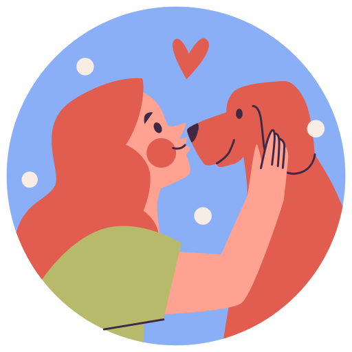

Nossa História
A Taverna do Bicho foi fundada em 2026, com o objetivo de oferecer produtos e serviços de qualidade para pets de todas as espécies.
Desde então, temos nos dedicado a proporcionar uma experiência única para nossos clientes e seus animais de estimação.
